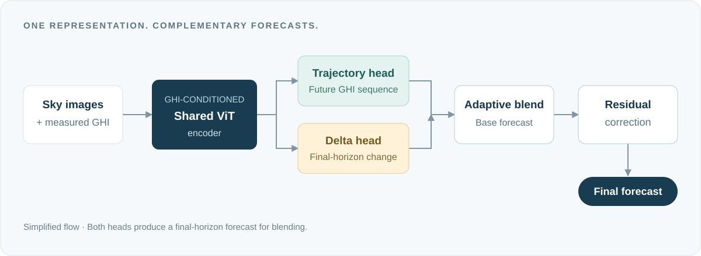

Complementary forecasts, one shared model.
GateFormer forecasts global horizontal irradiance (GHI) from sky imagery and recent irradiance measurements. A shared, GHI-conditioned Vision Transformer feeds two complementary predictors: one forecasts the future trajectory, while the other predicts change at the final horizon. A learned gate blends their forecasts, followed by a residual correction.

Results at a glance
Paired-timestamp evaluation
Across three sites
Evaluated on NREL-TSI, Chilbolton, and SIRTA. Figures are from the published paper; comparisons follow its evaluation protocol.
Follow the code release
This is the paper’s project page. The implementation will be added to the GitHub repository in a future update.
Bookmark or star the repository, or choose Watch → Custom → Releases on GitHub to follow future releases.
Cite this work
If this work is useful to your research, please cite the paper.
@article{hamlyn2026gateformer,
title = {{GateFormer}: Forecast-space decomposition for intra-hour solar irradiance prediction from sky images},
author = {Hamlyn, David and Chaudhary, Sunny and Hare, Jonathon and Rahman, Tasmiat},
journal = {Energy and AI},
volume = {26},
pages = {100917},
year = {2026},
doi = {10.1016/j.egyai.2026.100917},
url = {https://doi.org/10.1016/j.egyai.2026.100917}
}Related research
Vision Transformers for Estimating Irradiance Using Data-Scarce Sky Images
Our earlier work on solar irradiance estimation · Energy and AI, 2025